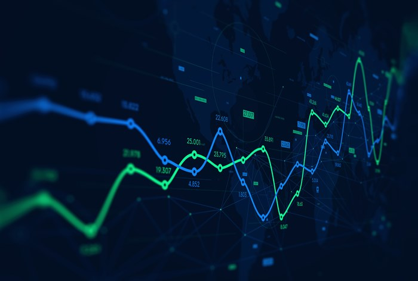
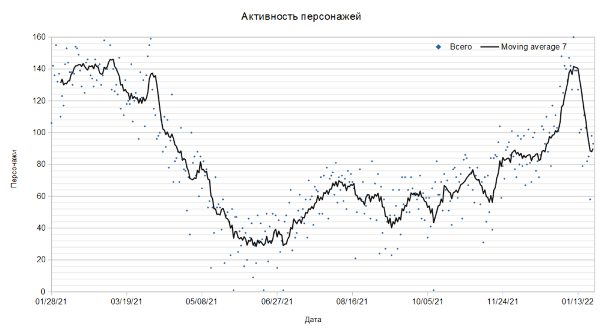
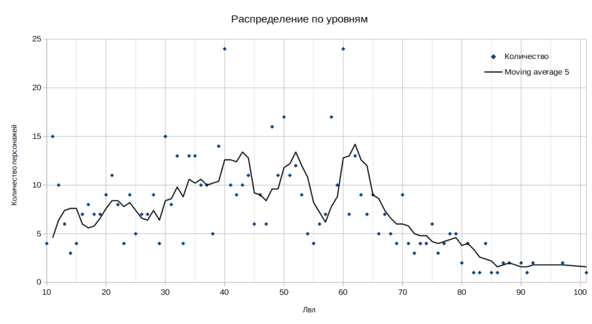
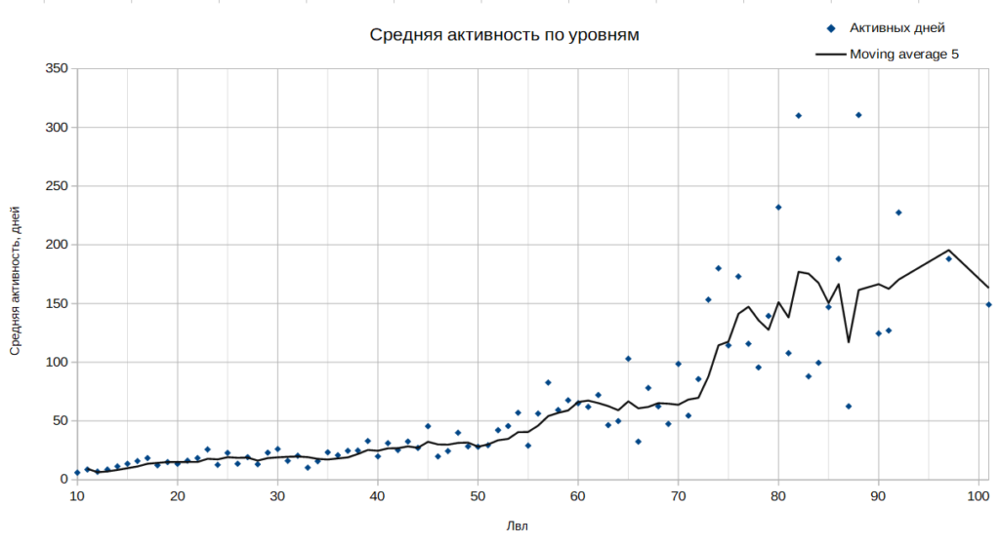
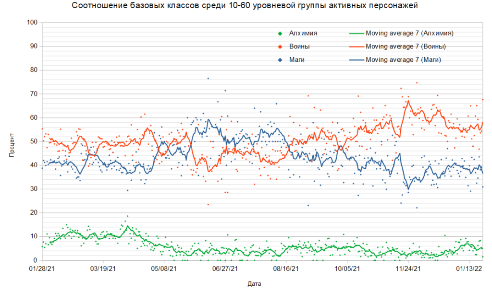
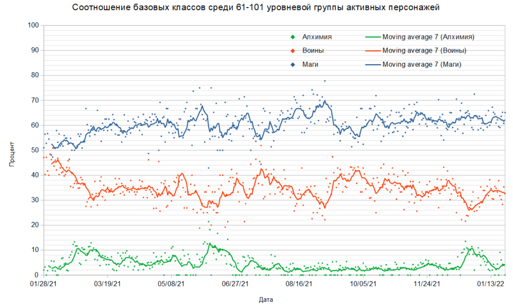
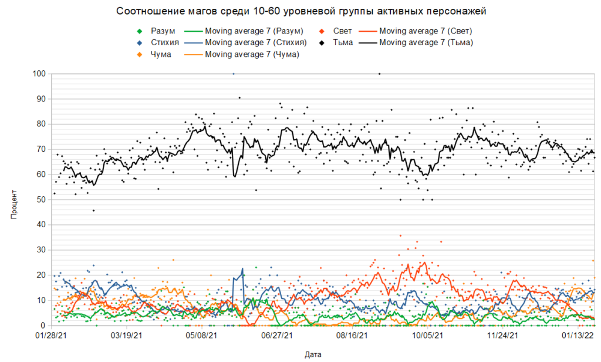
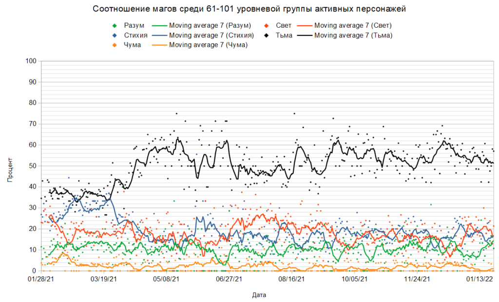
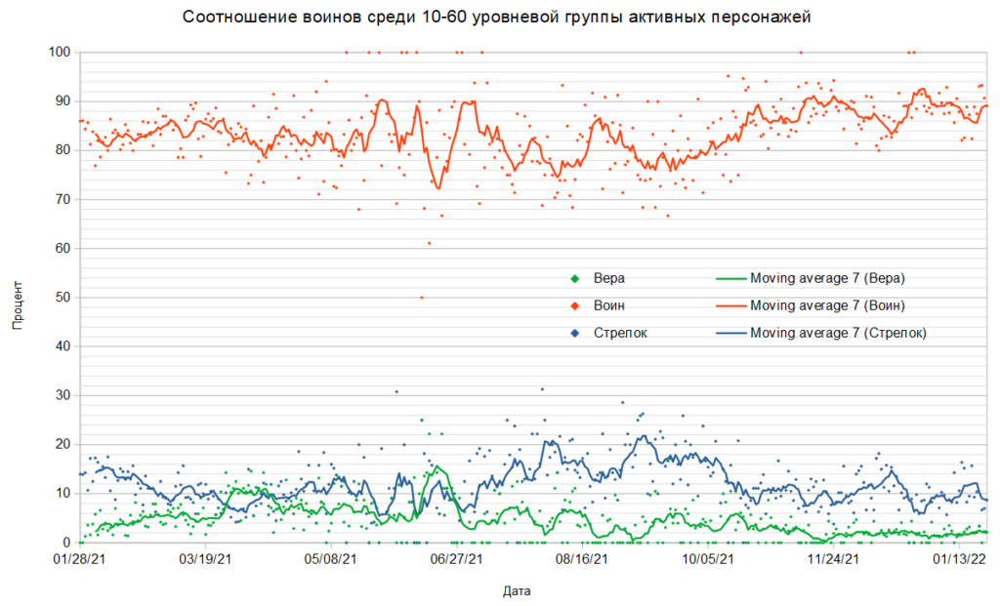
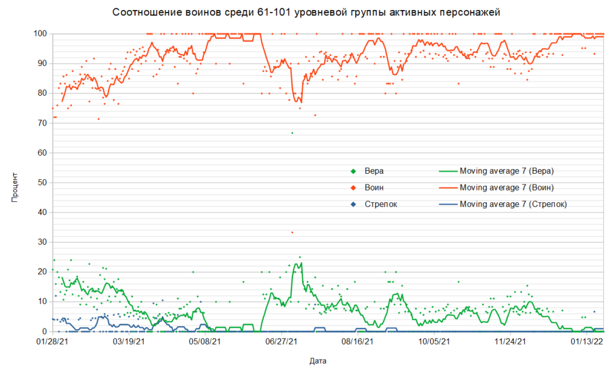

У меня уже давненько был сет игровых логов и было желание его поисследовать.
Начало логов было выбрано ровно в день большого обновления, когда была значительно изменена механика игры (криты, броня, сопротивление). К тому же прошли новогодние праздники и бонусы, что делает выборку немного лучше.
Обновлённый сет логов с 28.01.2021 по 24.01.2022 (361 день). Практически год.
В логах я определял активных участников (персонажи, которые наносят удары или произносят заклинания), их текущий уровень, профилировал их действия по типу (Воин, Вера, Стрелок, Разум, Свет, Стихия, Тьма, Чума, Алхимия) и считал сумму подобных действий за день.
Для магии учитывались только экспертные заклинания, чтобы выборка была чище.
Таком образом, сформировал примерно такую таблицу:
| День | Месяц | Год | Логин | Лвл | Профиль | Алхимия | Стихия | Тьма | Разум | Свет | Чума | Кровь | Вера | Воин | Стрелок |
| 26 | 9 | 2021 | Djan | 68 | Тьма | 247 | 132 | 2 | |||||||
| 21 | 11 | 2021 | ДИКИЙ_ТРОЛЛЬ | 78 | Воин | 90 | 291 | ||||||||
| 29 | 1 | 2021 | Pride | 84 | Свет | 105 | 263 | 13 |
Теперь пришел момент определить кто является активным игроком, а кто нет.
У меня были разные варианты как это сделать, но выбрал я следующий:
- Если персонаж за один конкретный день произвел не менее 15 действий, то он был активен в этот день
- Если персонаж за указанный период (356 дней) был активен не менее 5 дней, то он считается активным персонажем
Согласно этому методу получилось ровно 626 активных персонажей.
Лидеры по числу дней активности – Djan (343 дня), 1983Sevastopol1983 (341 день), ДИКИЙ_ТРОЛЛЬ (316 дней).
Лидеры по числу действий за день – Tier (17681 действие), Tier (15248) и снова Tier (15239).
Лидеры по общему числу действий за все дни – tolmin (968659), ДИКИЙ_ТРОЛЛЬ (941295), Время (680313). Вообще в топ-20 находится 17 воинов и 3 мага стихии.
Как активность игроков связана распределена по датам?

Получается, что “игровое дно” наступает в начале мая и продолжается до середины июля.
Упомянутые 626 персонажей распределены по уровням следующим образом (уровни указаны на момент последнего доступного лога)

Первый квартиль выборки – 30 лвл. Это значит что 25% активных персонажей меньше этого уровня.
Второй квартиль – 44 лвл. Ровно половина активных персонажей ниже этого уровня, а вторая – выше.
Третий квартиль – 60 лвл. То есть 25% активных персонажей выше этого уровня.
Теперь давайте вычислим есть ли зависимость уровня и игровой активности.

Кроме очевидного факта что рост уровня связан с игровой активностью, мы так же можем наблюдать что в районе 72-77 уровней имеется увеличенная игровая активность, которая спадает на 80-87 уровнях.
Конечно же, это может быть связано с тем что у нас не такая большая выборка и данные просто “смазаны”. В противном случае можно выдвинуть следующие две гипотезы:
- на 72-77 уровнях потенциал роста за счёт комплектов Альматеи и Белиара полностью выработан и персонажи собирают комплекты Магистра и Воина Крови. Именно поэтому тут много активности, которая не так быстро перетекает в увеличение уровня.
- на 80-87 уровнях комплекты Воина Крови и Магистра уже собраны, но нет иной подходящей активности, которая вызывала бы интерес. Либо активности настолько сложны/долгосрочны, что за них просто не берутся.
Теперь давайте посмотрим меняется ли соотношение воинов и магов на всём исследуемом периоде?
Для этого построим графики зависимости (две штуки, для уровней ниже 3-го квартиля и выше) процентного количества воинов (классические воины + воины веры + стрелки), магов (тьма, стихия, разум, свет, вера) и алхимиков от времени


Эти графики меня подталкивают к следующим выводам:
- В 10-60 уровневой группе сохраняется условный паритет между воинами и магами. И тех и других примерно одинаковое колличество. К концу периода воинов даже становится больше. Связано ли это с тем что маги выросли и перешли в старшую группу, а воины – нет, не ясно.
- В 61-101 уровневой группе в начале исследуемого периода было соотношение практически одинаковым (практически 1 к 1). К концу периода разрыв увеличился до 60% магов к 30% воинов (условно 2 магов к 1 воину). Но эта динамика сложилась в первые 1.5-2 месяца. Возможно что это следствие больших игровых обновлений и потери интереса игры за персонажей-воинов у части игроков.
- Тем не менее, факт того что на старших уровнях встречается в 2 раза меньше воинов чем магов очевиден.
Далее предлагаю оценить меняется ли динамика среди магов


Опять же, довольно интересные вещи получаются. В 10-60 уровненой группе доминирование тёмных просто неоспоримое. Они держали и держат 60% магического онлайна.
В старшей уровненовй группе (61-101) в начале исследуемого периода соотношение темных и стихов было примерно одинаково, но теперь же процент темных значительно вырос, таким образом на каждого стиха приходится 2.5-3 тёмных мага.
Свет/разум я не буду рассматривать, т.к. они не являются полноценными магиями.
Чума. Вот тут у меня лично сомнений нет. Маленький спрос на магию чумы объясняется, как и раньше, отсутствием понимания как за неё играть. Ведь эта магия требует долгого боя, а, значит, и защиты, которой у чумы как бы нет.
Давайте посмотрим на воинов. С технической стороны дела довольно сложно различить контактных воинов между собой, а так же лучников от арбалетчиков. Поэтому, они объединены в логические группы Воины и Стрелки соответственно.


Эти графики практически без сюрпризов. Если в младшей группе стрелки еще подают признаки жизни, то в старшей они явно мертвы.
Пока всё.